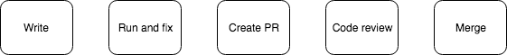
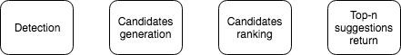
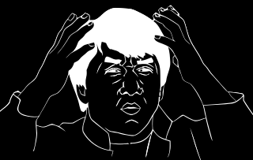

Typos correction in code identifiers
Irina Khismatullina
source{d}
#MLonCode
Plan
- Intro
- When do we correct typos in code identifiers
- How do we correct typos in code identifiers
- How can we get better
Code identifiers
class ClassName:
@classmethod
def function_name(cls) -> str:
variable_name = "Hello, I'm ClassName object!"
return variable_name
Typos correction
funktion ➙ function
GetValu ➙ GetValue
str_lenght ➙ str_length
Typos correction inside code identifiers
class ClasName:
@classmethod
def function_name(cls) -> str:
varyable_name = "Hello, I'm ClassName object!"
return varyable_name
Typos correction inside code identifiers
class ClasName:
@classmethod
def function_name(cls) -> str:
varyable_name = "Hello, I'm ClassName object!"
return varyable_name
Typos correction inside code identifiers
class ClassName:
@classmethod
def function_name(cls) -> str:
variable_name = "Hello, I'm ClassName object!"
return variable_name
When do we fix typos in code?
Stages of development

- Writing code
Compiling, building, running, fixing code locally- Creating a Pool Request (PR) to add code to the project's repository
- Code review
- Merging new code with the whole project code
Stages of development
- Writing code - developer & IDE
- Running, fixing code locally
- Creating a PR to add code to the project's repository
- Code review
- Merging new code with the whole project code
Stages of development
- Writing code - developer & IDE
- Running, fixing code locally - developer & IDE & tools
- Creating a PR to add code to the project's repository
- Code review
- Merging new code with the whole project code
Stages of development
- Writing code - developer & IDE
- Running, fixing code locally - developer & IDE & tools
- Creating a PR to add code to the project's repository - automatic checks
- Code review
- Merging new code with the whole project code
Stages of development
- Writing code - developer & IDE
- Running, fixing code locally - developer & IDE & tools
- Creating a PR to add code to the project's repository - automatic checks
- Code review
- Merging new code with the whole project code
Code review
Colleagues/leads/maintainers/teachers check the new code and suggest changes:
- Fix typos and mistakes in code
- Improve code style
- Make some optimizations (either in code text or related to computational complexity)
After the reviewers are happy, the code is merged to the codebase.
Code review
- Filters out big part of bugs and problems before the code is added to the production
- Without it it's almost impossible to maintain a good quality of code, especially in open source
- Takes *A LOT* of the reviewers' time
- Need to understand somebody else's code and read it carefully
- Boring - a lot of small repeating stupid mistakes like typos
Stages of development
- Writing code - developer & IDE
- Running, fixing code locally - developer & IDE & tools
- Creating a PR to add code to the project's repository - automatic checks
- Code review - colleagues, teachers, team leads
- Merging new code with the whole project code
Solution: automate what we can!
Stages of development
- Writing code - developer & IDE
- Running, fixing code locally - developer & IDE & tools
- Creating a PR to add code to the project's repository - automatic checks
- Code review - colleagues, teachers, team leads
- Merging new code with the whole project code
Stages of development
- Writing code - developer & IDE
- Running, fixing code locally - developer & IDE
- Creating a PR to add code to the project's repository - automatic checks
- Code review - colleagues, teachers, team leads
- Merging new code with the whole project code
Goal: filter as much typos as possible automatically on PR creation
Automatic checks on PR creation
- Continuous integration - automatic build of the project and tests run
- Static code analysis tools - check code against a set of defined rules
- src-d/lookout - assisted code review, run custom analyzers on Pool Requests (open source)
Lookout analyzer
- "Reviewer bot" - analyzes code files and leaves comments
- Two methods:
train() and analyze()
- Trained on the analyzed project repo
- Can be pretrained on a big collection of code
- Can be run on a server, therefore allows for complex ML models
High-level API
class MyAnalyzer(Analyzer):
@classmethod
def train(cls, ...) -> AnalyzerModel:
# ...
def analyze(self, ...) -> [Comment]:
# do something with self.model
How do we fix typos in code identifiers?
Classical approach

- Based on a vocabulary of correct words
- Candidates for correction - words from the vocabulary, close on the edit distance to the checked word
Typos correction in code
- Identifiers and comments need to be checked
- Vocabulary is difficult to compose
- Identifiers need to be correctly tokenized before checking:
get_value = GetValue = getvalue
Built-in-IDEs spellcheckers
- Need to be very fast and lightweight
- Primitive algorithms with low quality
- Based on small restricted vocabulary
Typos correction with src-d/lookout
Perks
- Can go language agnostic thanks to source{d} Babelfish
- Use of huge dataset of code identifiers, already present in the world's codebase (49 mln unique identifiers with stats)
- src-d/ml stack for code analysis (e.g identifiers are tokenized with a char-biLSTM model)
We can use Machine Learning
Vocabulary
- Universal vocabulary is derived from the dataset of identifiers:
- Contains most frequent tokens
- Contains English words
- Filtering based on edit distances
- All identifiers' tokens in the repo are added to the vocabulary
Detection
- Only new identifiers are checked
- All tokens from the new identifiers are checked (even if they are inside the vocabulary)
The correction pipeline

Token embeddings
- Train Fasttext model on a sample (~100mln) from the identifiers dataset
- Fastext is good for typoed tokens
- Use token embeddings for candidates ranking
Candidates generation
- Find candidates with the SymSpell
- Identifier to which the token belongs - a context
- Features: based on the frequencies, embeddings, similarity and edit distance between the elements
Candidates ranking
- Logistic regression model on tuples
(identifier, token, candidate):
label=1 if the candidate is the correct suggestionlabel=0 otherwise
- Group by the token and sort
- XGBoost is used for the logistic regression
Suggestions
- Suggested token itsetf - not correcting
- Otherwise return corrections
Training and testing
- Train and test datasets are sampled from the dataset of identifiers
- Random artificial typos
- Dataset itself contains typos
Metrics
- Detection precision - we should never suggest corrections for the correct tokens
- Detection recall - find as many typos as possible
- Correction accuracy - when we correct a token, we'd better correct it right
Results on a token level
- Detection precision - 98%
- Detection recall - 82%
- Top3 correction accuracy - 95%
Note: the test dataset is not a ground truth.
Main problems
- Strong dependency on the vocabulary (both in quality and the model's size)
- Noisy dataset of identifiers
- Lack of ground truth vocabulary
The worst
Complicated architecture strongly based on human knowledge:
- Fasttext model
- Symspell for correction candidates generation
- Feature generation
- XGBoost for ranking

We need something simpler
DL models for typos correction
- Simple Machine Translation problem
- End-to-end training
- Char-based models - no dependency on a vocabulary
- All info is encoded in the model's weights
Summary
- Typos leak into the last stage of code development
- Assisted code review + ML = ♥
- Vocabulary is the main problem
- DL model will nicely handle that